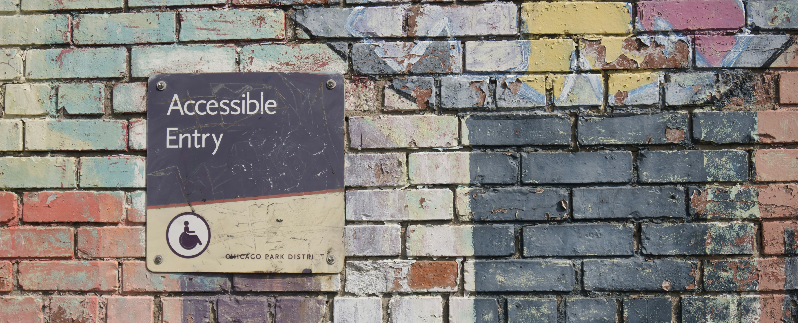

Case Study
This is a case study of the Standard Tap website, which I redesigned and made accessible as part of my accessibility final project for Drexel University. The original website can be found at https://www.standardtap.com/.
In this case study, I will discuss the changes I made to the website to improve its accessibility, as well as the rationale behind those changes. I will also provide screenshots of the original and redesigned websites for comparison.
Changes Made
- Added alt text to all images on the website.
- Added ARIA labels to all navigation links and buttons.
- Added a skip link to allow users to bypass the navigation and go directly to the main content.
- Improved color contrast for better readability.
- Adjusted overlays and fonts for readability.
- Added keyboard navigation support for all interactive elements.
- Added a Dyslexia toggle for inclusivity.
- Created light and dark mode colorways.
Rationale
The changes I made were based on best practices for web accessibility that we discussed during our course. By adding alt text and ARIA labels, I ensured that screen readers can accurately describe the content and functionality of the website. The skip link allows users who rely on keyboard navigation to easily access the main content without having to navigate through the entire menu. Improving color contrast helps users with visual impairments read the text more easily. Finally, adding keyboard navigation support ensures that all users can interact with the website regardless of their input method. The goal of this project was to ensure any and every user could use the site. I learned about screen readers, tabbing, and other disability considerations that I hadn't thought of before.
Coding The Site
I learned coding for accessibility requires attention to the finest details and a constant double backing on your work. While building out these pages I found myself returnin to my other pages and learning from what I accomplished there. It also became imperative to test this site with the actual tools that users with disabilities would use. This would lead me to new problems that I wouldn't have been able to find on my own. Due to the time constraints of this ten week course and my other heavier courseloads I decided to go for a much simpler website and three pages that I could ensure were built out well and as accessible as possible. In the future I think I will create seperate JS files and CSS files to allow for a more neat integration of code. I often found my CSS would conflict while coding and that is what took up the brunt of my work and time for this project. Using ai tools and my existing knowledge base of these coding languages I was able to effectively trouble shoot and completea strong finished website.
Lessons Learned
Overall, this was an incredible opportunity to learn more about the considerations and tools that are required to create accessible sites. To design and develop not just in accordance ot accessibility law, but in accordance to my own morals and values is extremely portnant. I want my designs to resonate and be accessible to all users. Now I feel like I have the proper tool sets to confidently tackle any site or project in an accessible way.
Comparison
Original Website:

Original Website:
Redesigned Website: